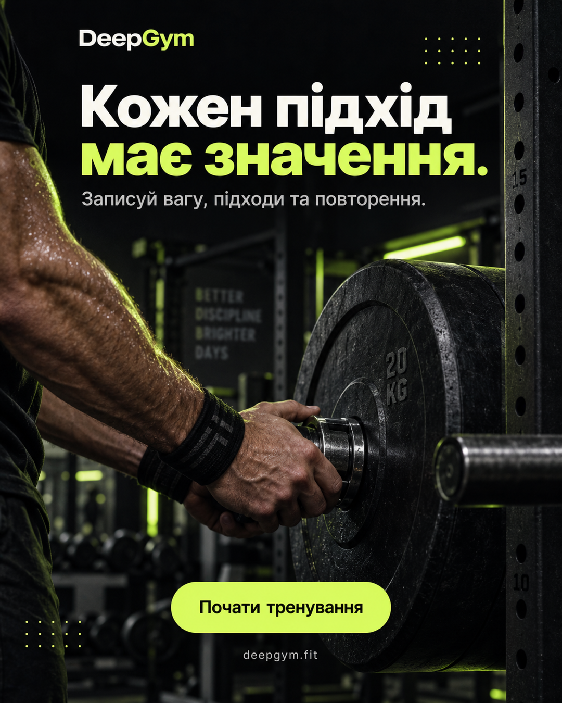
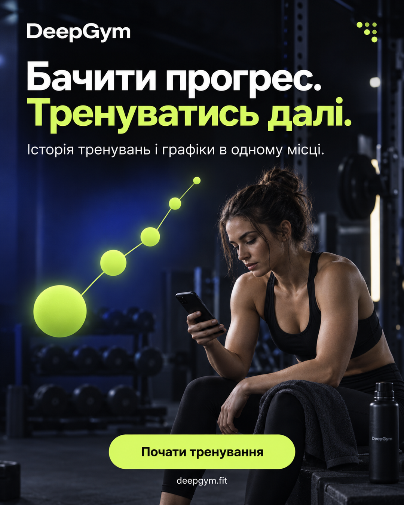
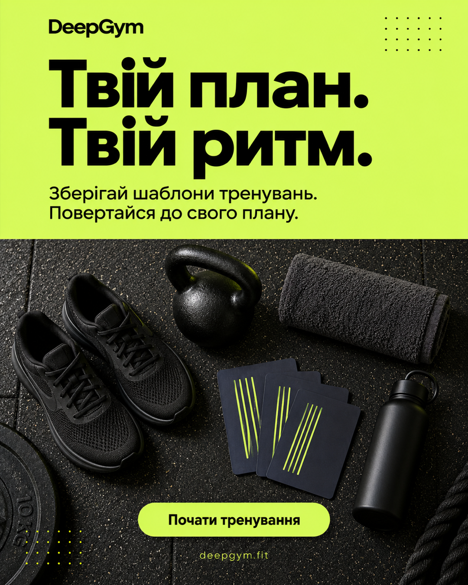
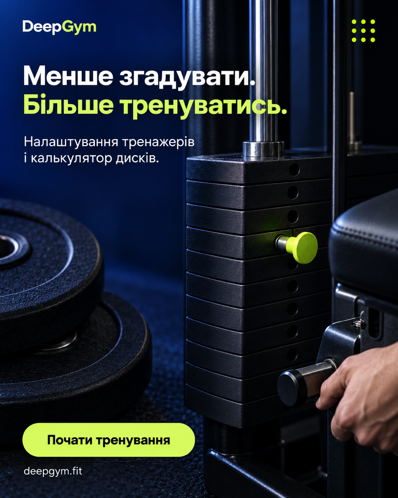
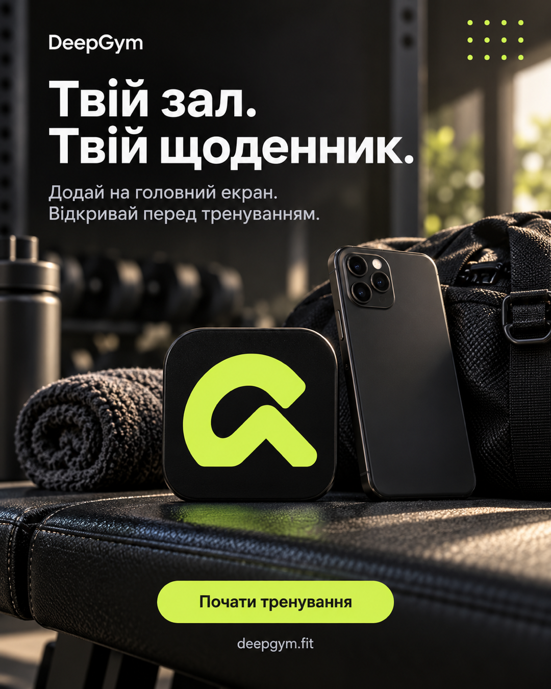

01 · Журнал тренувань
Кожен підхід має значення.
Вага, підходи й повторення — зберігай деталі кожного тренування у DeepGym. Повертайся до історії, коли плануєш наступне заняття.
Заголовок оголошення: Щоденник твого тренування
Готові українські зображення 1080 × 1350 для рекламної стрічки. Оберіть креатив, завантажте PNG та використайте підготовлений текст оголошення.
Тексти й посилання кампанії
Вага, підходи й повторення — зберігай деталі кожного тренування у DeepGym. Повертайся до історії, коли плануєш наступне заняття.
Заголовок оголошення: Щоденник твого тренування

Переглядай минулі тренування та графіки у DeepGym. Відстежуй зміни робочої ваги й тримай свою історію під рукою.
Заголовок оголошення: Твоя історія в одному місці

Збирай власні шаблони тренувань у DeepGym і повертайся до свого плану. Вправи та структура наступного заняття — в одному місці.
Заголовок оголошення: Зберігай свої шаблони

Зберігай налаштування тренажерів і користуйся калькулятором дисків у DeepGym. Деталі, до яких зручно повернутися перед підходом.
Заголовок оголошення: Налаштування завжди під рукою

Відкрий DeepGym у браузері та додай на головний екран телефона. Веди щоденник тренувань і повертайся до нього перед наступним заняттям.
Заголовок оголошення: Додай DeepGym на головний екран